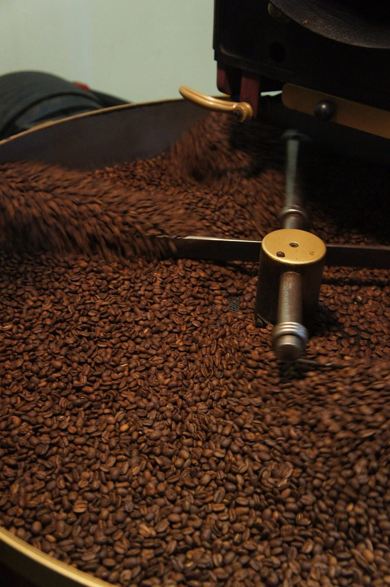

カフェ / 秋田県大仙市
FOGcoffee
秋田県大仙市大曲大町にあるカフェ「FOGcoffee」のご案内ページです。営業時間やメニューなど、詳しいことは準備中。まずはInstagramをのぞいてみてください。
写真の見本(イメージ)
物の質感を三枚。
写真はお店のものではありません。国外または撮影地不明のフリー素材です。


ご案内
確認できているお店の情報
| 所在地 | 〒014-0025 秋田県大仙市大曲大町2-24 |
|---|---|
| 電話 | 0187-64-9044 |
| 営業時間 | 準備中 |
| 定休日 | 準備中 |
| ご予約 | 準備中 |
| 駐車場 | 準備中 |
| SNS | Instagram @fog_coffee |